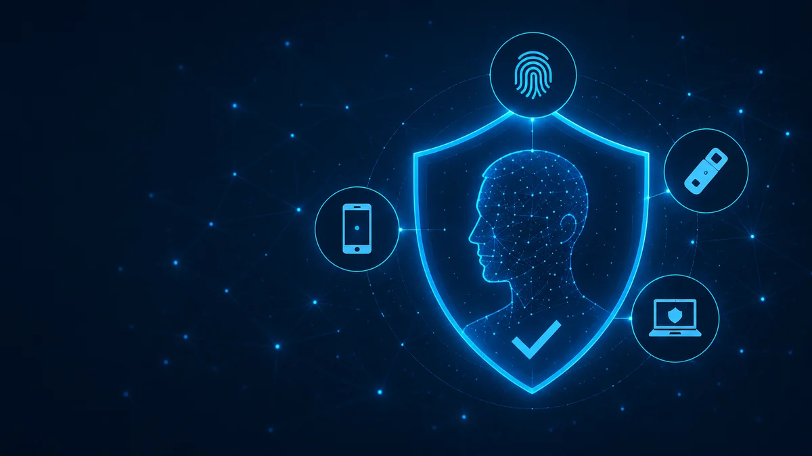
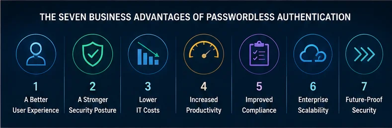
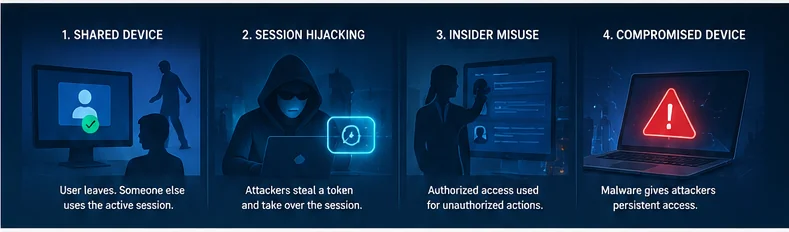
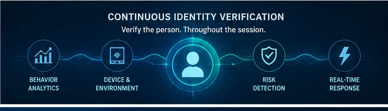

Passwordless Authentication Is Changing Enterprise Security—But It’s Only the Beginning

For decades, passwords have represented the weakest link in enterprise cybersecurity. They are forgotten, reused, stolen, phished, and traded on the dark web by the billions. Organizations have invested countless hours and millions of dollars trying to strengthen passwords through complexity rules, mandatory rotations, password managers, and multi-factor authentication (MFA). Yet attackers continue to find success because the password itself remains a vulnerable secret.
Passwordless authentication represents one of the most significant advances in cybersecurity in recent years. By replacing passwords with cryptographic credentials, biometrics, hardware security keys, and trusted devices, organizations dramatically reduce their exposure to credential theft while providing users with a far better experience.
But while passwordless authentication removes one of the largest attack vectors, it raises an equally important question:
How do we continuously know that the authenticated person is actually the legitimate user throughout the session?
That question represents the next evolution of digital identity.
The Seven Business Advantages of Passwordless Authentication

1. A Better User Experience
One of the biggest benefits of passwordless authentication is simplicity.
Employees no longer need to remember dozens of passwords or repeatedly reset forgotten credentials. Customers no longer abandon transactions because they cannot remember login information.
Authentication becomes almost invisible.
Whether using facial recognition, a fingerprint, a FIDO2 security key, or a trusted mobile device, access can occur in seconds with far less friction.
Less friction often translates directly into higher productivity, greater customer satisfaction, and improved application adoption.
2. A Stronger Security Posture
Passwords remain the primary target of cybercriminals because they can be stolen.
Passwordless authentication removes that target.
Instead of relying on shared secrets, organizations authenticate users using cryptographic keys, biometrics, trusted devices, and hardware authenticators that are significantly more resistant to:
Phishing attacks
Credential stuffing
Brute-force attacks
Password spraying
Account takeover
Removing passwords dramatically reduces an organization’s attack surface.
3. Lower IT Costs
Industry studies consistently show that password resets remain one of the most common help desk requests.
Each reset consumes IT resources while frustrating employees.
Passwordless authentication significantly reduces:
Password reset requests
Account lockouts
Help desk tickets
Password policy administration
Credential lifecycle management
Instead of supporting passwords, IT teams can focus on strategic security initiatives.
4. Increased Productivity
Every forgotten password interrupts business.
Every reset delays work.
Every authentication problem creates friction.
Passwordless authentication minimizes these interruptions by allowing users to authenticate quickly and continue working without unnecessary delays.
Over thousands of employees and millions of logins, these productivity gains become substantial.
5. Improved Compliance and Audit Readiness
Organizations operating under regulations such as HIPAA, PCI DSS, GDPR, CJIS, SOX, and numerous government frameworks require strong authentication controls and detailed audit trails.
Passwordless authentication supports these objectives through:
Strong user verification
Cryptographic authentication
Comprehensive logging
Improved identity assurance
Better access governance
Modern passwordless platforms also provide enhanced visibility into authentication events, helping security teams detect suspicious behavior earlier.
6. Enterprise Scalability
Modern enterprises span cloud applications, mobile devices, remote workers, contractors, partners, and legacy systems.
Passwordless authentication scales far more effectively than traditional password management because it integrates across diverse environments while maintaining a consistent authentication experience.
Whether users access SaaS applications, on-premises systems, VPNs, healthcare applications, banking systems, or government portals, passwordless authentication provides a unified security framework.
7. Future-Proof Security
Cybersecurity is constantly evolving.
Attackers increasingly use artificial intelligence, automation, and sophisticated social engineering to bypass traditional defenses.
Passwordless authentication positions organizations for the future by leveraging:
Public key cryptography
Device trust
Biometrics
Hardware security modules
FIDO2 standards
AI-assisted risk analysis
The result is an authentication model designed for modern threats rather than legacy technologies.
Passwordless Solves Password Problems—But Identity Still Matters

Removing passwords is a tremendous advancement.
However, authentication is only one moment in time.
Many attacks occur after successful authentication.
Consider several common scenarios:
Scenario 1: The Shared Device
An employee authenticates using biometrics on a shared workstation.
The employee walks away.
Someone else immediately begins using the already-authenticated session.
The login was legitimate.
The current user may not be.
Scenario 2: Session Hijacking
An attacker steals a valid session cookie through malware or browser compromise.
No password is required.
No login occurs.
Traditional passwordless authentication may never detect that the authenticated session has changed hands.
Scenario 3: Social Engineering
A user unknowingly approves a legitimate authentication request during a sophisticated phishing campaign.
Authentication succeeds.
The attacker now has an active authenticated session.
Again, the issue isn’t the password.
The issue is confidence that the correct person remains behind the device.
The Next Evolution: Continuous Identity Verification
These scenarios illustrate an important distinction.
Authentication answers:
“Who authenticated?”
Modern identity security increasingly asks:
“Can we continuously trust that this is still the same person?”
That shift—from one-time authentication to continuous identity assurance—is becoming one of the defining trends in Zero Trust security architectures.
Where Full Duplex Authentication® Fits

One approach to strengthening passwordless environments is to complement initial authentication with ongoing identity verification.
Identité’s patented Full Duplex Authentication® (FDA) was designed around this philosophy.
Rather than viewing authentication as a single event, FDA introduces an additional layer of human-centered verification that helps confirm the legitimacy of the interaction throughout the authentication experience.
Its unique challenge-response methodology helps ensure that both the user and the system are actively validating one another, creating greater confidence that trust has not been compromised.
This approach can significantly strengthen passwordless deployments by helping mitigate risks associated with:
Session hijacking
Push fatigue attacks
MFA prompt bombing
Remote access compromise
Device sharing
Social engineering
Credential theft that bypasses traditional MFA
Instead of replacing passwordless authentication, Full Duplex Authentication® is designed to enhance it by adding another dimension of identity assurance.
Looking Ahead: What Comes Next?
The cybersecurity industry is moving beyond simply eliminating passwords.
Several trends are beginning to reshape enterprise authentication:
Continuous Authentication
Authentication will increasingly become an ongoing process rather than a single login event, continuously evaluating user behavior, device health, location, risk signals, and identity confidence.
AI-Powered Risk Decisions
Artificial intelligence will help determine when additional verification is truly necessary, reducing unnecessary user friction while strengthening security against anomalous behavior.
Adaptive Zero Trust
Organizations will make authentication decisions dynamically based on context, continuously recalculating trust instead of granting permanent access after login.
Identity as the New Security Perimeter
As networks continue to dissolve across cloud, hybrid, and remote environments, identity—not the network—will become the primary security boundary.
Human-Centered Security
Perhaps most importantly, successful security solutions will increasingly focus on protecting users without burdening them.
The strongest security is often the security users barely notice.
Final Thoughts
Passwordless authentication represents one of the most important improvements organizations can make to their cybersecurity strategy. It reduces phishing risk, lowers operational costs, improves compliance, and dramatically enhances the user experience.
But as attackers evolve, organizations must also think beyond the login itself.
The future belongs to solutions that not only verify users at the point of authentication but also maintain confidence in identity throughout the digital interaction.
Passwordless authentication removes passwords.
Continuous identity assurance helps preserve trust.
Together, they represent the next chapter in modern cybersecurity.